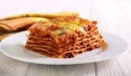

Best Lasagna Ever!

←Back
Ingrediants:
- 12 Lasagna Noodles
- 1 lb of Italian Sausage
- 5 cups mozzerella cheese
- 30oz of Tomato Sauce
- 15oz of Tomato Paste
- 1/2teas Italian Seasoning
- 1/3teas pepper
- 1/2 teas Garlic Powder (1 garlic clove)
- 1 egg
- 15oz Cottage Cheese
Assembaly:
- Brown Italian Sausage in a pan (drain greace)
- Add Italian Sausage ,Tomato sauce and paste, Italian seasoning, Pepper and Garlic in a bowl and mix
- Add the Cottage Cheese and Eggs in a seperate bowl and mix
- Spray a 9x13 with oil and add a little bit of water in it
- Layer the ingrediants like this:
- Lasagna Noodles
- Cottage Cheese mixture
- Sauce
- Mozzerella Cheese
Do this 4 times
- Cover the tray in tin foil sprayed with oil
- Bake at 375°F for 1hr
- Remove tin foil and bake for 20-25 min
Credit: my mom